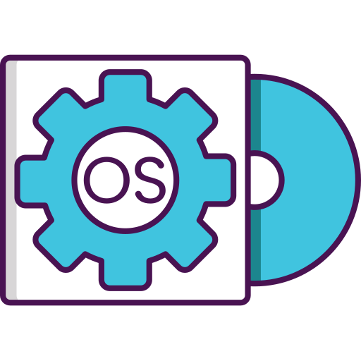

Minhas competencias
Ao longo da minha formação no ITC adquiri diversas habilidades, conhecimentos e competencias na area de Informatica e continuo a aprender e desenvolver novas habilidades.

HTML
Conhecimentos na criação e estruturação de paginas web usando HTML.
80%CSS
Conhecimentos na estilização de paginas web, utilizando cores, margens, bordas, posicionamento e outros recursos.
75%Microsoft office
Conhecimentos adquiridos nas aplicações do pacote Microsoft office como por exemplo Word, Powerpoint, Excel e Acess.
90%
Sistemas operativos
Desenvolvi conhecimentos sobre funções, objectivos, como instalar, configurar e atualizar sistemas operativos.
40%Segurança Informatica
Conhecimentos sobre Virus, malwares, proteção de dados e boas praticas de segurança digital.
60%Redes de computadores
Conhecimentos sobre redes de computadores, dispositivos de rede, servidores e ligações entre computadores.
65%